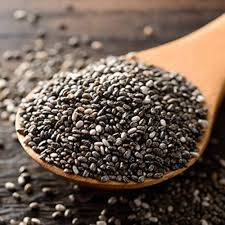

Chia seeds are the edible seeds of Salvia hispanica, a flowering plant in the mint family (Lamiaceae) native to central and southern Mexico, or of the related Salvia columbariae, Salvia polystachia, or Salvia tiliifolia. Chia seeds are oval and gray with black and white spots, having a diameter of around 2 millimetres (0.08 in). The seeds are hygroscopic, absorbing up to 12 times their weight in liquid when soaked and developing a mucilaginous coating that gives chia-based foods and beverages a distinctive gel texture. There is evidence that the crop was widely cultivated by the Aztecs in pre-Columbian times and was a staple food for Mesoamerican cultures. Chia seeds are cultivated on a small scale in their ancestral homeland of central Mexico and Guatemala and commercially throughout Central and South America.
Chia is an annual herb growing up to 1.75 metres (5 feet 9 inches) tall, with opposite leaves that are 4–8 cm (1+1⁄2–3+1⁄4 in) long and 3–5 cm (1+1⁄4–2 in) wide. Its flowers are purple or white and are produced in numerous clusters in a spike at the end of each stem Typically, chia seeds are small flattened ovoids measuring on average 2.1 mm × 1.3 mm × 0.8 mm (0.08 in × 0.05 in × 0.03 in), with an average weight of 1.3 mg per seed. They are mottle-colored with brown, gray, black, and white. The seeds are hydrophilic, absorbing up to 12 times their weight in liquid when soaked; they develop a mucilaginous coating that gives them a gel texture. Chia (or chian or chien) has mostly been identified as Salvia hispanica L. Other plants referred to as "chia" include "golden chia" (Salvia columbariae). The seeds of Salvia columbariae are also used for food. Seed yield varies depending on cultivars, mode of cultivation, and growing conditions by geographic region. For example, commercial fields in Argentina and Colombia vary in yield range from 450 to 1,250 kg/ha (400 to 1,120 lb/acre). A small-scale study with three cultivars grown in the inter-Andean valleys of Ecuador produced yields up to 2,300 kg/ha (2,100 lb/acre), indicating that favorable growing environment and cultivar interacted to produce such high yields. Genotype has a larger effect on yield than on protein content, oil content, fatty acid composition, or phenolic compounds, whereas high temperature reduces oil content and degree of unsaturation, and raises protein content.
S. hispanica is described and pictured in the Codex Mendoza' and the Florentine Codex, Aztec codices created between 1540 and 1585. Tribute records from the Mendoza Codex, Matrícula de Tributos, and the Matricula de Huexotzinco (1560), along with colonial cultivation reports and linguistic studies, detail the geographic location of the tributes and provide some geographic specificity to the main S. hispanica-growing regions. Most of the provinces grew the plant, except for areas of lowland coastal tropics and desert say, and it was given as an annual tribute by the people to the rulers in 21 of the 38 Aztec provincial states. The traditional area of cultivation was in a distinct area that covered parts of north-central Mexico, south to Guatemala. A second and separate area of cultivation, apparently pre-Columbian, was in southern Honduras and Nicaragua. Chia seeds served as a staple food for the Nahuatl (Aztec) cultures. It may have been as important as maize as a food crop. Jesuit chroniclers placed chia as the third-most important crop in the Aztec culture, behind only corn and beans, and ahead of amaranth. Offerings to the Aztec priesthood were often paid in chia seed. In the 21st century, chia is grown and consumed commercially in its native Mexico and Guatemala, as well as Bolivia, Argentina, Ecuador, Nicaragua, Australia, the United Kingdom and the United States. New patented varieties of chia have been developed in Kentucky for cultivation in northern latitudes of the United States.